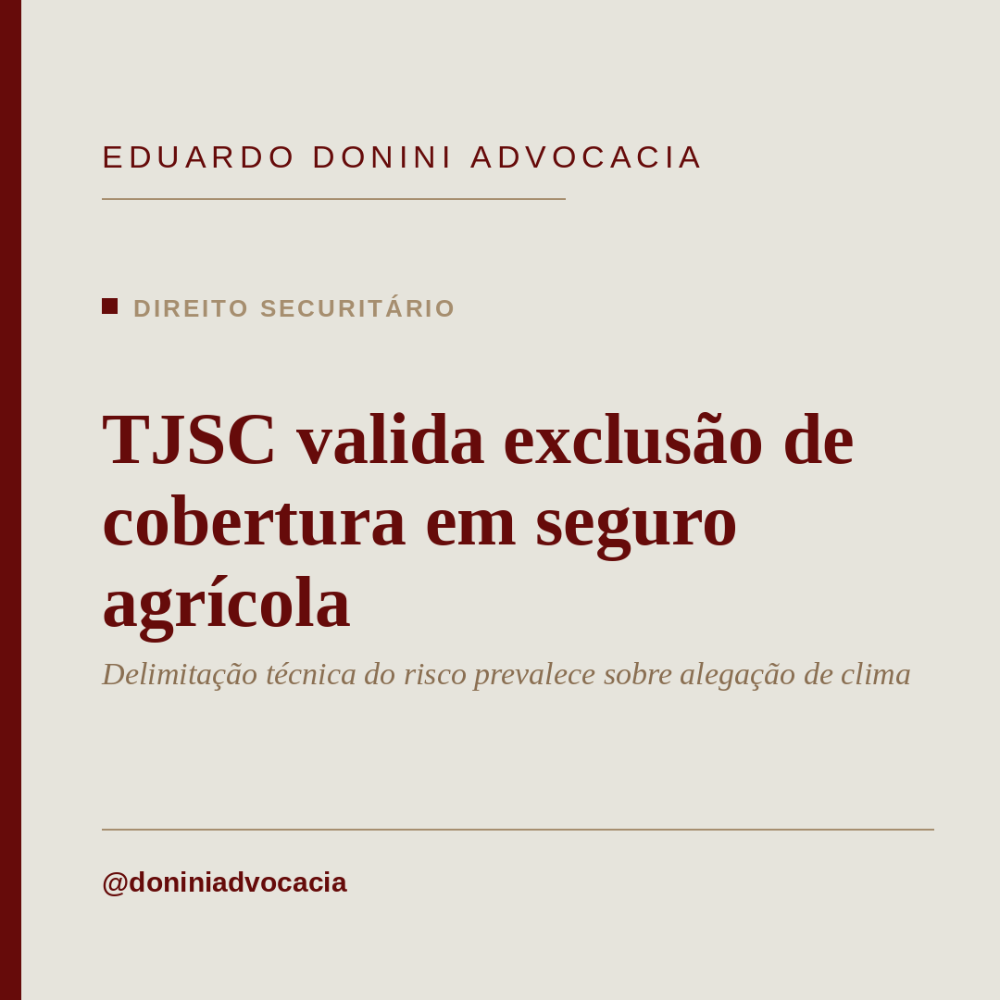
Direito Securitário
7 ago 2026, manhã
A 6ª Câmara Cível do Tribunal de Justiça de Santa Catarina manteve sentença que julgou improcedente pedido de indenização securitária envolvendo uma lavoura de soja. O segurado alegava perdas por estiagem e excesso de chuvas, mas a seguradora negou a cobertura por se tratar de área classificada como de primeiro ou segundo ano após pastagem, hipótese expressamente excluída na apólice. Ao julgar o recurso, o colegiado entendeu que a controvérsia não estava na causa climática do dano, mas na própria delimitação objetiva do risco assumido pelo contrato. O tribunal também afastou a alegação de abusividade da cláusula, por considerar que a exclusão estava clara e era de conhecimento do segurado desde a contratação. A decisão reforça a validade das cláusulas limitativas quando bem redigidas, mesmo em relações regidas pelo Código de Defesa do Consumidor.
Fonte: TJSC, Apelação Cível nº 5032721-80.2024.8.24.0018 (6ª Câmara Cível)
Se ficou com dúvida ou deseja mais informações sobre o tema, os canais oficiais do escritório estão à disposição, faça contato pelo e-mail contato@doniniadvocacia.com.br ou WhatsApp (51) 99707-2698, e agende hoje mesmo sua consulta.
#seguroagricola #clausuladeexclusao #contratodeseguro #direitosecuritario #sinistro #TJSC #apolicedeseguro #direitoempresarial #direitocivil #direito #advocacia
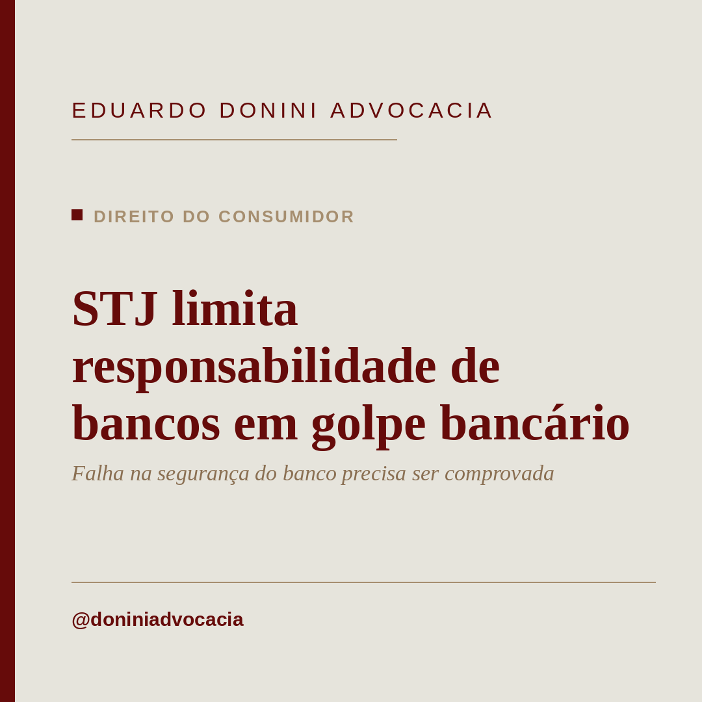
Direito Médico
5 ago 2026, tarde
A 4ª Turma do Superior Tribunal de Justiça, por unanimidade, deu provimento a recurso para restabelecer sentença que havia afastado a responsabilidade de médicos e hospital em ação envolvendo o óbito de um recém-nascido. O caso havia sido reformado pelo Tribunal de Justiça de São Paulo, que condenou os réus ao pagamento de R$ 120 mil a cada autor, mesmo diante de laudo pericial que concluía pela ausência de culpa e de nexo causal. Para o relator, ministro João Otávio de Noronha, afastar as conclusões técnicas da perícia exige fundamentação idônea e baseada em elementos concretos dos autos, o que não ocorreu no julgamento de origem. A decisão reforça que, em matérias de alta complexidade médica, a valoração da prova pericial pelo julgador não pode se apoiar em suposições genéricas, protegendo profissionais e instituições de saúde contra condenações sem lastro técnico robusto.
Fonte: STJ, AREsp 2.773.143/SP, Rel. Min. João Otávio de Noronha, 4ª Turma
Se ficou com dúvida ou deseja mais informações sobre o tema, os canais oficiais do escritório estão à disposição, faça contato pelo e-mail contato@doniniadvocacia.com.br ou WhatsApp (51) 99707-2698, e agende hoje mesmo sua consulta.
#direitomedico #erromedico #responsabilidademedica #laudopericial #STJ #defesadomedico #direitohospitalar #direitodasaude #direito #advocacia
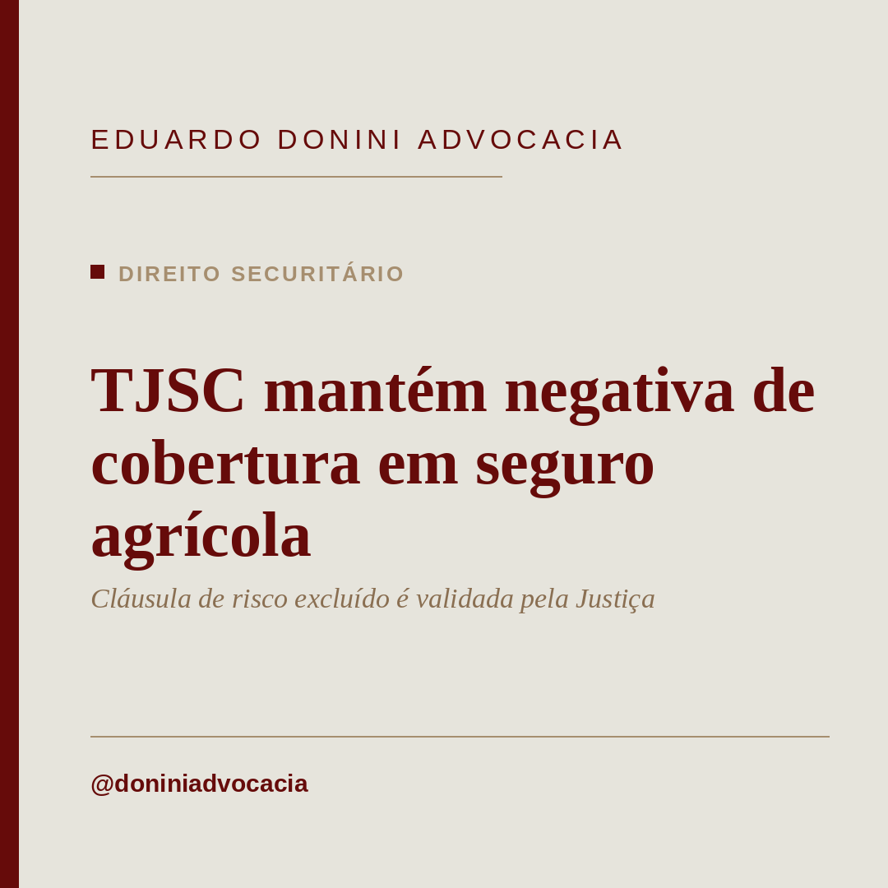
Direito Securitário
4 ago 2026, tarde
A Quarta Turma do Superior Tribunal de Justiça decidiu que a indenização do extinto seguro DPVAT não é devida quando o acidente de trânsito ocorre durante a prática de crime doloso envolvendo o próprio veículo objeto do delito. O caso teve origem no Paraná, envolvendo um homem que se feriu ao conduzir uma motocicleta que acabara de subtrair, e cuja indenização havia sido reconhecida nas instâncias ordinárias. Para a relatora, ministra Isabel Gallotti, o caráter social e a dispensa de comprovação de culpa no DPVAT não se confundem com irrelevância do dolo, que rompe a lógica da aleatoriedade própria de qualquer contrato de seguro. A Corte concluiu que a função do seguro obrigatório é proteger vítimas inocentes do trânsito, e não amparar quem cria deliberadamente a situação de risco ao atuar à margem da lei.
Fonte: STJ, REsp 1.850.543/PR (4ª Turma)
Se ficou com dúvida ou deseja mais informações sobre o tema, os canais oficiais do escritório estão à disposição, faça contato pelo e-mail contato@doniniadvocacia.com.br ou WhatsApp (51) 99707-2698, e agende hoje mesmo sua consulta.
#dpvat #segurodpvat #direitosecuritario #seguros #stj #indenizacaosecuritaria #acidentedetransito #direitocivil #direitodoconsumidor #direito #advocacia
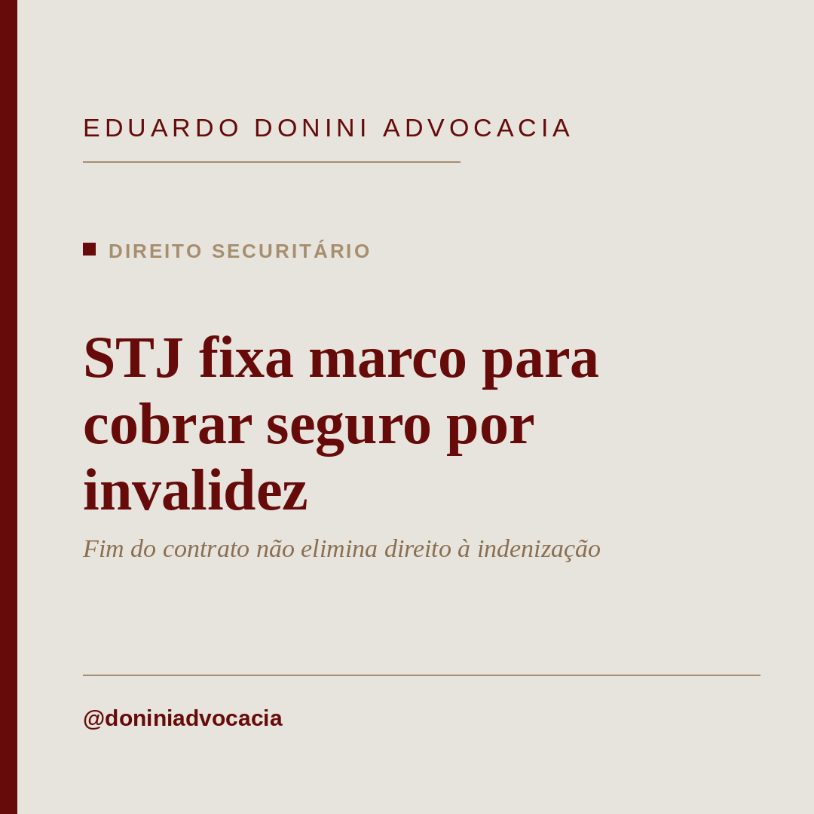
Direito Securitário
4 ago 2026, manhã
O STJ definiu que o prazo de um ano para cobrar indenização de seguro de vida por invalidez permanente começa a contar da ciência inequívoca da invalidez ou, se houver pedido administrativo, da negativa formal da seguradora. A tese foi firmada pela Quarta Turma no julgamento do REsp 2.193.596-SC, de relatoria do ministro Antonio Carlos Ferreira. O entendimento esclarece que, se o sinistro ocorreu durante a vigência da apólice, o direito à indenização permanece, ainda que a consolidação da invalidez só seja reconhecida após o término formal do contrato. Segundo o colegiado, o que importa é o momento em que ocorreu o fato gerador coberto pelo seguro, e não a data em que a extensão do dano é formalmente atestada.
Fonte: STJ, REsp 2.193.596/SC
Se ficou com dúvida ou deseja mais informações sobre o tema, os canais oficiais do escritório estão à disposição, faça contato pelo e-mail contato@doniniadvocacia.com.br ou WhatsApp (51) 99707-2698, e agende hoje mesmo sua consulta.
#segurodevida #invalidezpermanente #direitosecuritario #indenizacaosecuritaria #stj #prescricao #direitodoconsumidor #direitocivil #direito #advocacia
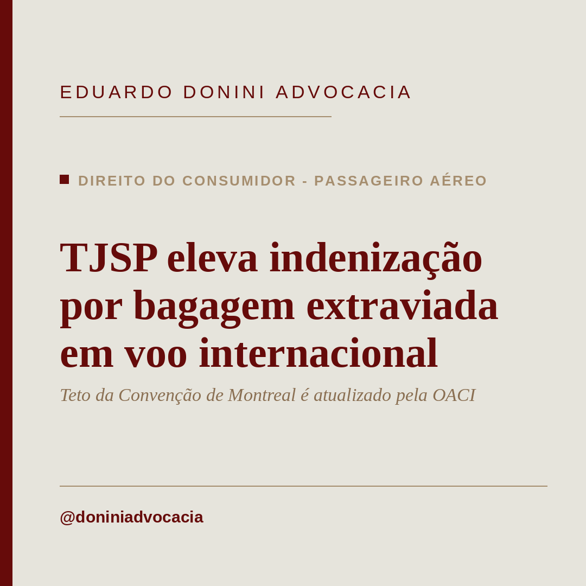
Direito do Consumidor - Passageiro Aéreo
3 ago 2026, tarde
A 16ª Câmara de Direito Privado do Tribunal de Justiça de São Paulo aumentou o valor de indenização concedido a um passageiro que teve a bagagem extraviada ao retornar de viagem internacional com trajeto entre São Paulo, Dublin, Madri e Londres. O colegiado entendeu que o cálculo da reparação por danos materiais deve considerar os valores de Direitos Especiais de Saque atualizados pela Organização da Aviação Civil Internacional, e não apenas o parâmetro histórico normalmente utilizado nas ações sobre o tema. Também foi mantida a condenação por danos morais, elevada para R$ 7 mil, sob o entendimento de que a perda definitiva de todos os pertences pessoais, somada à falta de assistência adequada das companhias aéreas, ultrapassa o mero dissabor. A decisão chama atenção de operadores do direito para a necessidade de atualização dos parâmetros normalmente aplicados em ações envolvendo extravio de bagagem em voos internacionais.
Fonte: TJSP, 16ª Câmara de Direito Privado, Apelação Cível 1019399-21.2025.8.26.0002
Se ficou com dúvida ou deseja mais informações sobre o tema, os canais oficiais do escritório estão à disposição, faça contato pelo e-mail contato@doniniadvocacia.com.br ou WhatsApp (51) 99707-2698, e agende hoje mesmo sua consulta.
#extraviodebagagem #direitodopassageiroaereo #convencaodemontreal #TJSP #voointernacional #danosmateriais #danomoral #direitodoconsumidor #direitoaereo #advocacia #direito
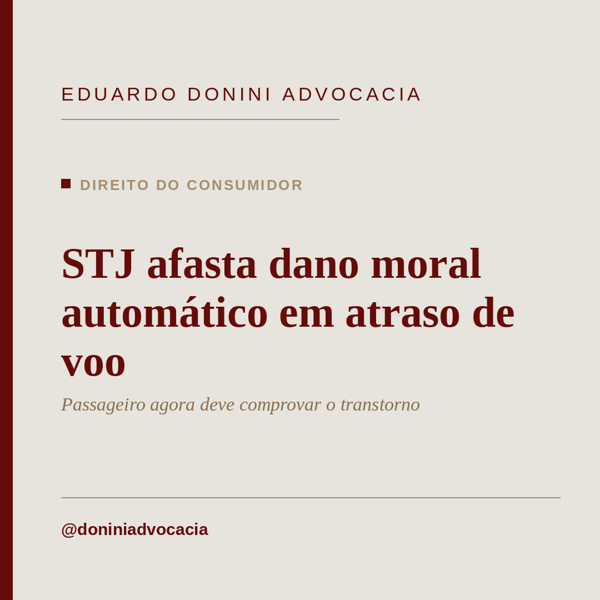
Direito do Consumidor
1 ago 2026, manhã
O Superior Tribunal de Justiça decidiu que o simples atraso ou cancelamento de voo não configura, por si só, dano moral presumido. Segundo a relatora, ministra Isabel Gallotti, a responsabilidade objetiva da companhia aérea pelo Código de Defesa do Consumidor não é absoluta, e o passageiro precisa comprovar que o atraso causou lesão extrapatrimonial efetiva, além do mero aborrecimento. O caso julgado envolveu um voo entre Chapecó (SC) e Sinop (MT), em que o passageiro perdeu a conexão e chegou ao destino final quase 24 horas após o horário previsto, alegando ter ficado sem acesso à bagagem e sem assistência adequada. Com a decisão da 4ª Turma, o processo retornou à origem para que seja reexaminado se há prova concreta do abalo moral alegado. O tema também está sob análise do STF, que discute em repercussão geral os limites da responsabilidade das companhias aéreas em casos de atraso e cancelamento de voo.
Fonte: STJ, REsp 2.232.322/MT, 4ª Turma (rel. Min. Isabel Gallotti)
Se ficou com dúvida ou deseja mais informações sobre o tema, os canais oficiais do escritório estão à disposição, faça contato pelo e-mail contato@doniniadvocacia.com.br ou WhatsApp (51) 99707-2698, e agende hoje mesmo sua consulta.
#direitodopassageiro #atrasodevoo #danomoral #companhiaaerea #direitoaereo #STJ #jurisprudencia #direitodoconsumidor #direito #advocacia
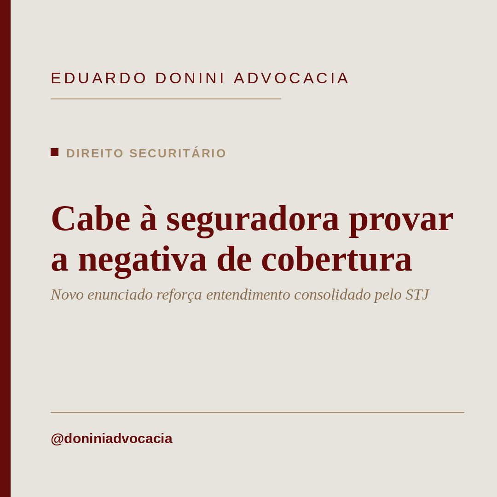
Direito Securitário
31 jul 2026, tarde
A 10ª Jornada de Direito Civil, promovida pelo Conselho da Justiça Federal, aprovou o Enunciado 699, que trata do ônus da prova nas disputas sobre negativa de cobertura securitária. O texto segue a linha já firmada pelo STJ no julgamento do REsp 2.150.776/SP, no qual a Terceira Turma decidiu que, comprovado o sinistro pelo segurado, é da seguradora o dever de demonstrar a causa que justificaria a exclusão da cobertura. Na ocasião, uma empresa teve negada a indenização por um incêndio em um guindaste, sob a alegação de que o sinistro teria origem interna do equipamento; a seguradora, porém, não conseguiu comprovar essa tese, e o STJ garantiu o pagamento à segurada. O novo enunciado reforça essa lógica também à luz da recente Lei do Contrato de Seguro, orientando a interpretação de cláusulas restritivas de forma mais rigorosa em relação às seguradoras. A tese é especialmente relevante para empresas e pessoas físicas que enfrentam recusas de indenização baseadas em alegações genéricas das seguradoras.
Fonte: STJ, REsp 2.150.776/SP (3ª Turma, Rel. Min. Nancy Andrighi); Enunciado 699 da 10ª Jornada de Direito Civil (CJF)
Se ficou com dúvida ou deseja mais informações sobre o tema, os canais oficiais do escritório estão à disposição, faça contato pelo e-mail contato@doniniadvocacia.com.br ou WhatsApp (51) 99707-2698, e agende hoje mesmo sua consulta.
#direitosecuritario #segurodebens #negativadecobertura #onusdaprova #sinistro #contratodeseguro #stj #jornadadedireitocivil #direitocivil #direitoempresarial #advocacia #direito
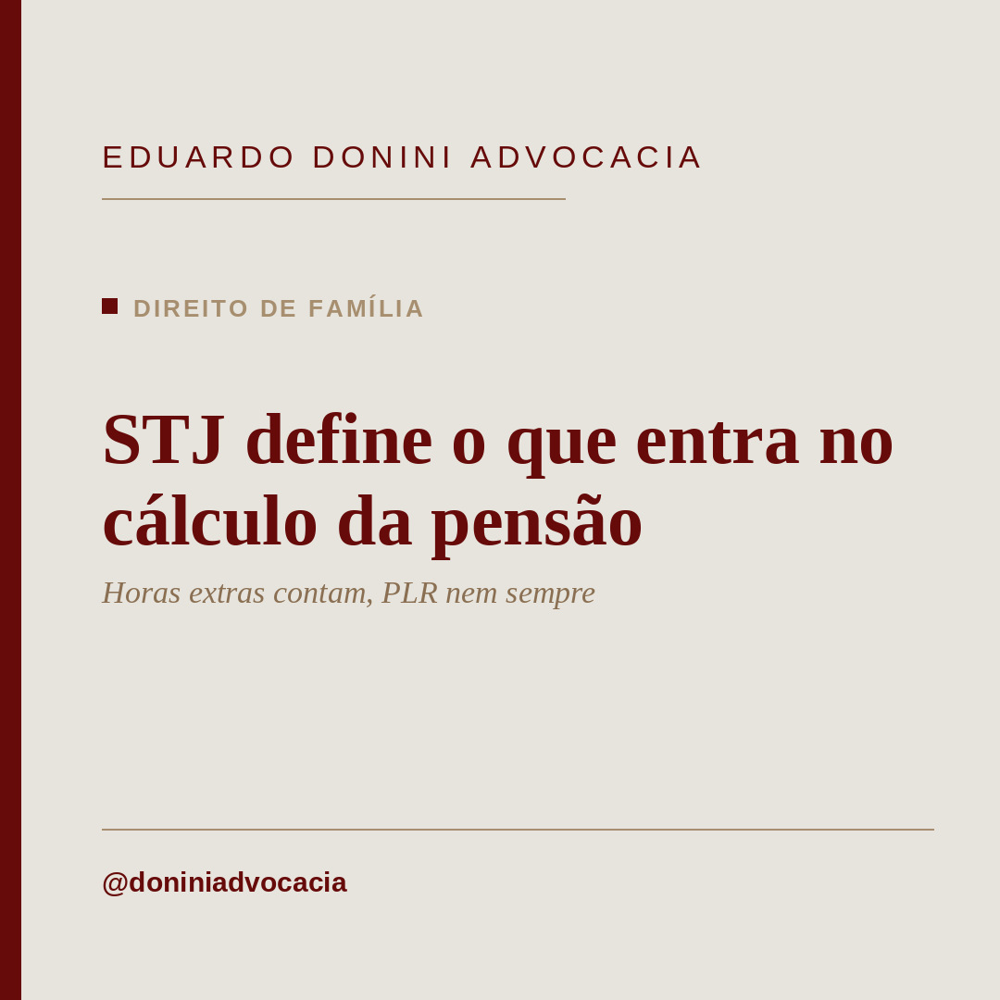
Direito de Família
30 jul 2026, tarde
A Quarta Turma do Superior Tribunal de Justiça fixou duas teses sobre quais verbas do alimentante compõem a base de cálculo da pensão alimentícia fixada em percentual sobre os rendimentos líquidos. Segundo o colegiado, relatado pelo ministro João Otávio de Noronha, as horas extras integram esse cálculo mesmo quando não são habituais, por representarem acréscimo remuneratório temporário na capacidade financeira de quem paga a pensão. Já a participação nos lucros e resultados (PLR) não entra automaticamente nessa base, por ter natureza indenizatória e eventual, sendo necessário comprovar necessidade específica de quem recebe os alimentos para que essa verba seja considerada. A decisão traz parâmetros importantes tanto para quem recebe quanto para quem paga pensão alimentícia com renda variável, especialmente em profissões com remuneração mista de salário fixo e bônus.
Fonte: STJ, Informativo de Jurisprudência - Edição Extraordinária n. 32 (4ª Turma, rel. min. João Otávio de Noronha)
Se ficou com dúvida ou deseja mais informações sobre o tema, os canais oficiais do escritório estão à disposição, faça contato pelo e-mail contato@doniniadvocacia.com.br ou WhatsApp (51) 99707-2698, e agende hoje mesmo sua consulta.
#pensaoalimenticia #direitodefamilia #STJ #alimentante #alimentando #horasextras #PLR #divorcio #direitocivil #advocacia #direito
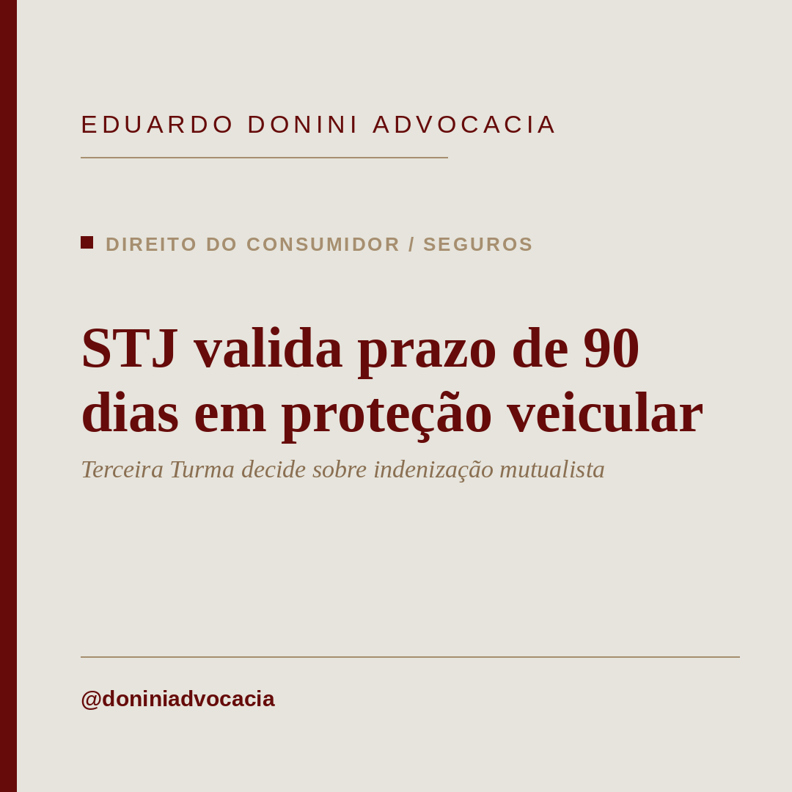
Direito do Consumidor / Seguros
30 jul 2026, manhã
A Terceira Turma do Superior Tribunal de Justiça decidiu, por unanimidade, que não é abusiva a cláusula de contrato de proteção patrimonial mutualista que estabelece prazo de até 90 dias úteis para o pagamento de indenização ao participante. O caso teve origem em ação envolvendo o roubo de um veículo, cujo dono buscava aplicar à cooperativa as regras dos seguros tradicionais, incluindo o prazo de 30 dias previsto pela Susep. Segundo o relator, ministro Ricardo Villas Bôas Cueva, o Código de Defesa do Consumidor pode incidir sobre esse tipo de contrato, mas a ausência de norma específica da Susep para as operações mutualistas faz prevalecer o que foi livremente pactuado entre as partes. A decisão reforça que consumidores e associações que operam nesse modelo de proteção patrimonial devem observar com atenção as regras contratuais até que sobrevenha regulamentação própria do setor.
Fonte: STJ, REsp 2.188.764/GO
Se ficou com dúvida ou deseja mais informações sobre o tema, os canais oficiais do escritório estão à disposição, faça contato pelo e-mail contato@doniniadvocacia.com.br ou WhatsApp (51) 99707-2698, e agende hoje mesmo sua consulta.
#protecaoveicular #direitosecuritario #stj #cdc #indenizacao #contratosdesconsumo #direito #advocacia #direitodoconsumidor #jurisprudencia
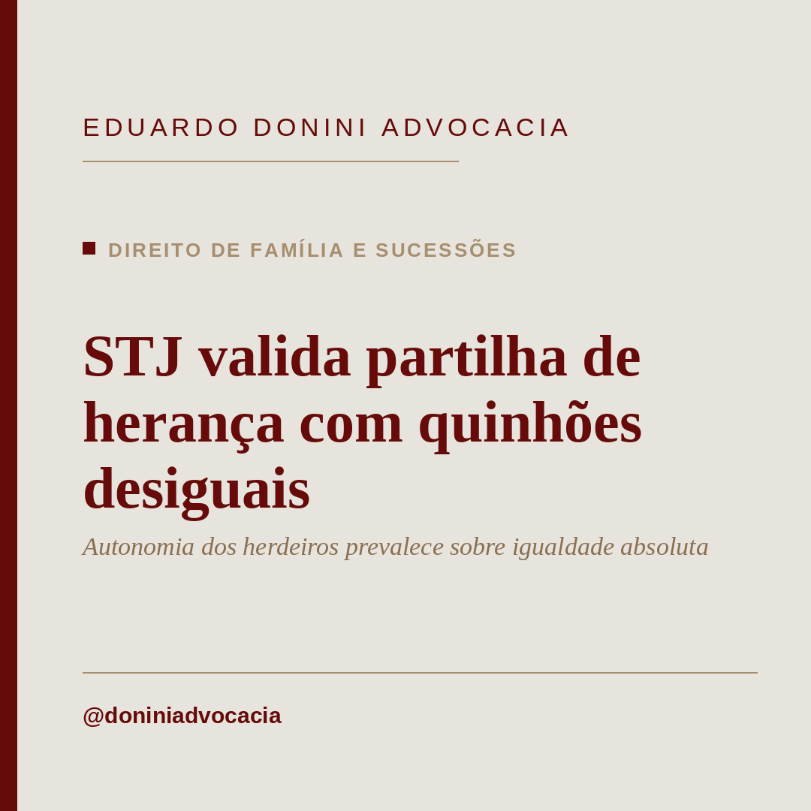
Direito de Família e Sucessões
29 jul 2026, tarde
A Terceira Turma do Superior Tribunal de Justiça decidiu, em julgamento sob relatoria da ministra Nancy Andrighi, que herdeiros maiores e capazes podem firmar partilha amigável com quinhões de valores diferentes, sem que isso seja tratado como renúncia parcial da herança. No caso analisado, o juízo de primeiro grau havia recusado a homologação e o Tribunal de Justiça de São Paulo manteve a recusa, por entender que o acordo disfarçaria uma doação entre os irmãos. Ao reformar essa posição, a relatora destacou que cabe ao magistrado apenas verificar a regularidade do procedimento e a livre manifestação de vontade das partes, sem exigir igualdade absoluta entre as partes da herança. A ministra também observou que eventual incidência tributária sobre a diferença entre os quinhões, equiparada à doação, deve ser resolvida perante o fisco, e não impede a homologação judicial do acordo. A decisão reforça a autonomia da família na organização do inventário, tema central em processos de planejamento sucessório e partilha de bens.
Fonte: STJ, REsp 2.225.451 (3ª Turma, rel. Min. Nancy Andrighi)
Se ficou com dúvida ou deseja mais informações sobre o tema, os canais oficiais do escritório estão à disposição, faça contato pelo e-mail contato@doniniadvocacia.com.br ou WhatsApp (51) 99707-2698, e agende hoje mesmo sua consulta.
#partilhadeheranca #inventario #direitosucessorio #planejamentosucessorio #heranca #stj #direitodefamilia #direitocivil #advocacia #direito
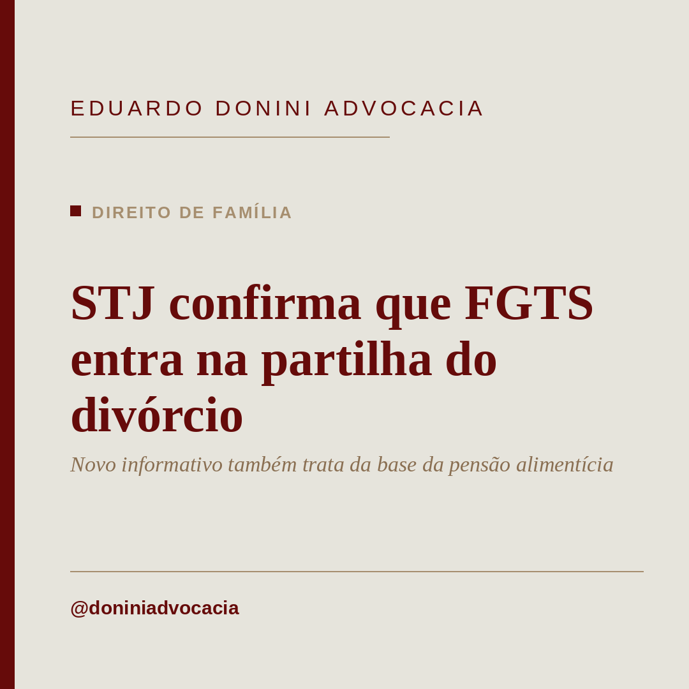
Direito de Família
28 jul 2026, tarde
O Superior Tribunal de Justiça divulgou nesta semana edição extraordinária do Informativo de Jurisprudência destacando duas decisões relevantes para o Direito de Família. Em um dos julgamentos, a Terceira Turma decidiu, por unanimidade, que os valores depositados na conta vinculada do FGTS durante a constância do casamento em regime de comunhão parcial de bens devem ser considerados comunicáveis e, portanto, partilhados no divórcio. O caso teve origem em acórdão do Tribunal de Justiça do Rio Grande do Sul, que havia negado a partilha, mas foi reformado pelo STJ, que também esclareceu ser possível reservar o valor da meação em conta específica para saque futuro, ainda que não haja levantamento imediato após a separação. No mesmo informativo, a Quarta Turma fixou tese de que as horas extras recebidas pelo alimentante, mesmo que não habituais, integram a base de cálculo da pensão fixada em percentual sobre os rendimentos líquidos, por representarem acréscimo patrimonial ao devedor.
Se ficou com dúvida ou deseja mais informações sobre o tema, os canais oficiais do escritório estão à disposição, faça contato pelo e-mail contato@doniniadvocacia.com.br ou WhatsApp (51) 99707-2698, e agende hoje mesmo sua consulta.
#fgts #partilhadebens #divorcio #pensaoalimenticia #direitodefamilia #uniaoestavel #stj #direito #advocacia
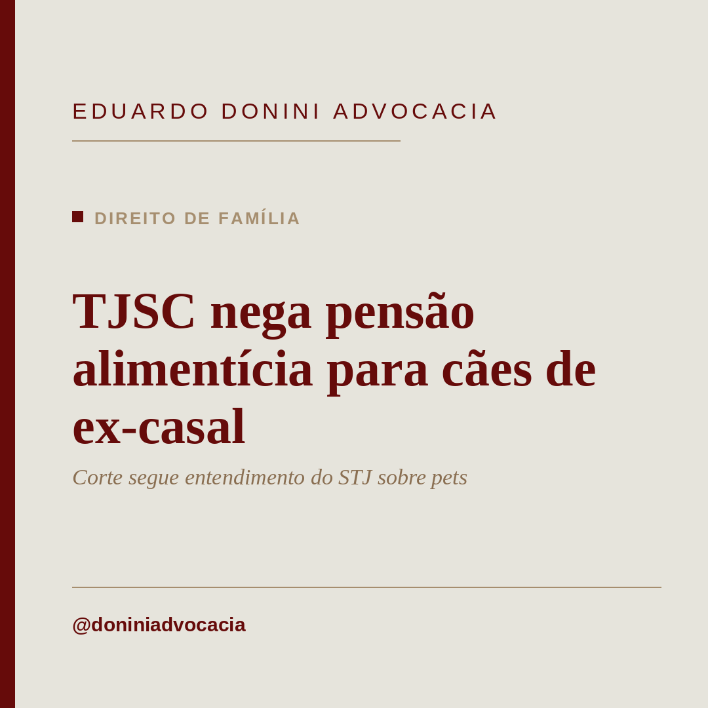
Direito do Consumidor
27 jul 2026, tarde
A Segunda Seção do STJ afetou o Tema 1.414 dos recursos repetitivos e determinou a suspensão, em todo o território nacional, de processos individuais e coletivos que discutam a validade de cartões de crédito consignado (RMC) e do cartão consignado de benefício (RCC). O julgamento vai definir parâmetros objetivos para caracterizar abusividade nesses contratos, especialmente quando o consumidor pretendia contratar um empréstimo consignado comum e acabou recebendo um cartão cujo desconto mensal cobre apenas o mínimo da fatura, prolongando a dívida de forma indeterminada. A Corte também vai fixar, em caso de invalidação do contrato, se a consequência será a restituição das partes ao estado anterior, a conversão em empréstimo consignado tradicional ou a revisão de cláusulas, além de decidir sobre a configuração de dano moral presumido. A medida decorre da constatação de teses conflitantes entre diferentes tribunais estaduais sobre o mesmo tema, o que gerava insegurança jurídica para consumidores e instituições financeiras. Até a fixação da tese vinculante, ações individuais sobre o assunto ficam paralisadas, ressalvada a possibilidade de pedidos de urgência para interromper descontos em casos de risco à subsistência do consumidor.
Se ficou com dúvida ou deseja mais informações sobre o tema, os canais oficiais do escritório estão à disposição, faça contato pelo e-mail contato@doniniadvocacia.com.br ou WhatsApp (51) 99707-2698, e agende hoje mesmo sua consulta.
#cartaoconsignado #rmc #consignado #stj #direitodoconsumidor #temarepetitivo #jurosabusivos #direitobancario #direito #advocacia
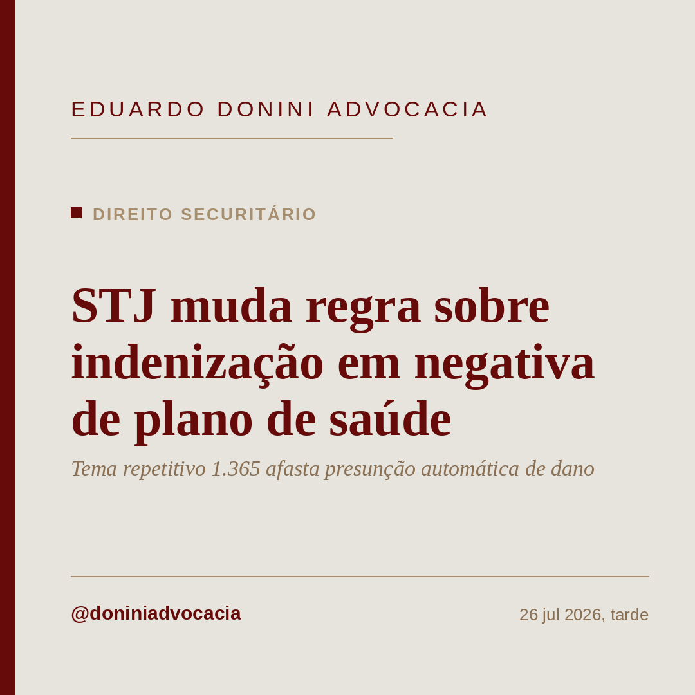
Direito Securitário
26 jul 2026, tarde
A 2ª Seção do Superior Tribunal de Justiça fixou tese em recurso repetitivo, Tema 1.365, definindo que a simples recusa indevida de cobertura médico-assistencial por operadora de plano de saúde não gera automaticamente o direito à indenização por dano moral. Segundo o entendimento firmado, o beneficiário precisa comprovar elementos concretos que demonstrem abalo emocional além do mero aborrecimento decorrente do descumprimento contratual. O próprio colegiado ressalvou exceções relevantes: em casos de urgência ou emergência médica, cancelamento unilateral indevido do plano ou situações de hipervulnerabilidade do paciente, a presunção de dano ainda pode ser reconhecida. Por se tratar de julgamento em repetitivo, a tese deve ser aplicada por todos os tribunais do país e libera para andamento milhares de processos que estavam suspensos aguardando essa definição.
Se ficou com dúvida ou deseja mais informações sobre o tema, os canais oficiais do escritório estão à disposição, faça contato pelo e-mail contato@doniniadvocacia.com.br ou WhatsApp (51) 99707-2698, e agende hoje mesmo sua consulta.
#planodesaude #danomoral #temarepetitivo #direitosecuritario #stj #saudesuplementar #direitodoconsumidor #direitocivil #advocacia #direito
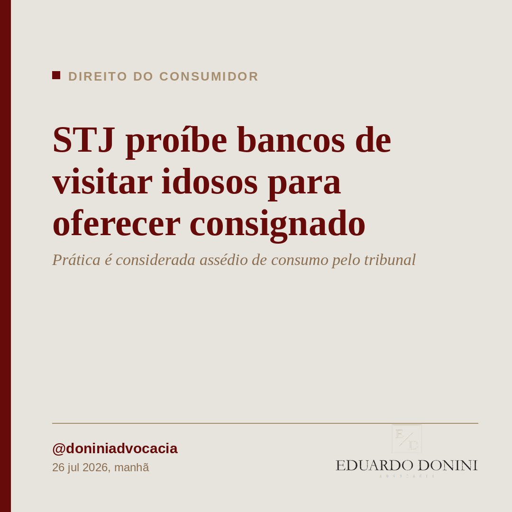
Direito do Consumidor
26 jul 2026, manhã
O Superior Tribunal de Justiça decidiu que visitas domiciliares não solicitadas de correspondentes bancários a aposentados e pensionistas do INSS, com o objetivo de oferecer empréstimos consignados, configuram assédio de consumo, prática vedada pelo Código de Defesa do Consumidor. A Terceira Turma manteve a condenação de bancos que atuavam dessa forma no Maranhão, reconhecendo que idosos formam um grupo especialmente vulnerável nas relações de consumo. Segundo a relatora do caso, a abordagem em casa reduz a capacidade de reflexão do consumidor idoso e o pressiona a aceitar o contrato de forma imediata. O entendimento também reforça que as instituições financeiras respondem pelos atos de seus correspondentes bancários, mesmo quando a oferta indevida é feita por terceiros.
#DireitoDoConsumidor #STJ #ConsignadoINSS #DireitosDoIdoso #CDC #InformaçãoJurídica
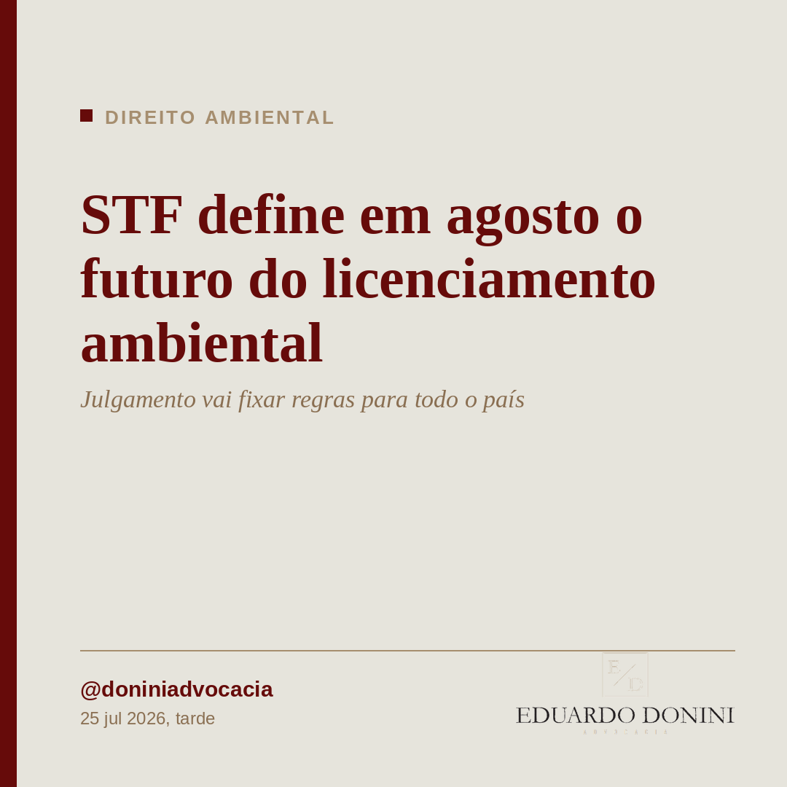
Direito Ambiental
25 jul 2026, tarde
O Supremo Tribunal Federal deve julgar, na segunda semana de agosto, um conjunto de ações que discutem a validade da Lei Geral do Licenciamento Ambiental. O julgamento reúne as ADIs 7.913, 7.916 e 7.919 e a ADC 102, todas sob relatoria do ministro Alexandre de Moraes. A lei, sancionada em agosto de 2025 após a derrubada de vetos presidenciais pelo Congresso, criou modalidades como o licenciamento por autodeclaração e redefiniu competências entre União, estados e municípios. Entre os pontos questionados estão a proteção a povos indígenas e quilombolas, a autonomia dos municípios e os limites da simplificação de procedimentos ambientais. A decisão deve impactar diretamente empreendimentos que dependem de licenciamento, órgãos ambientais e comunidades tradicionais em todo o país.
#DireitoAmbiental #STF #LicenciamentoAmbiental #MeioAmbiente #DireitoConstitucional #NotíciasJurídicas
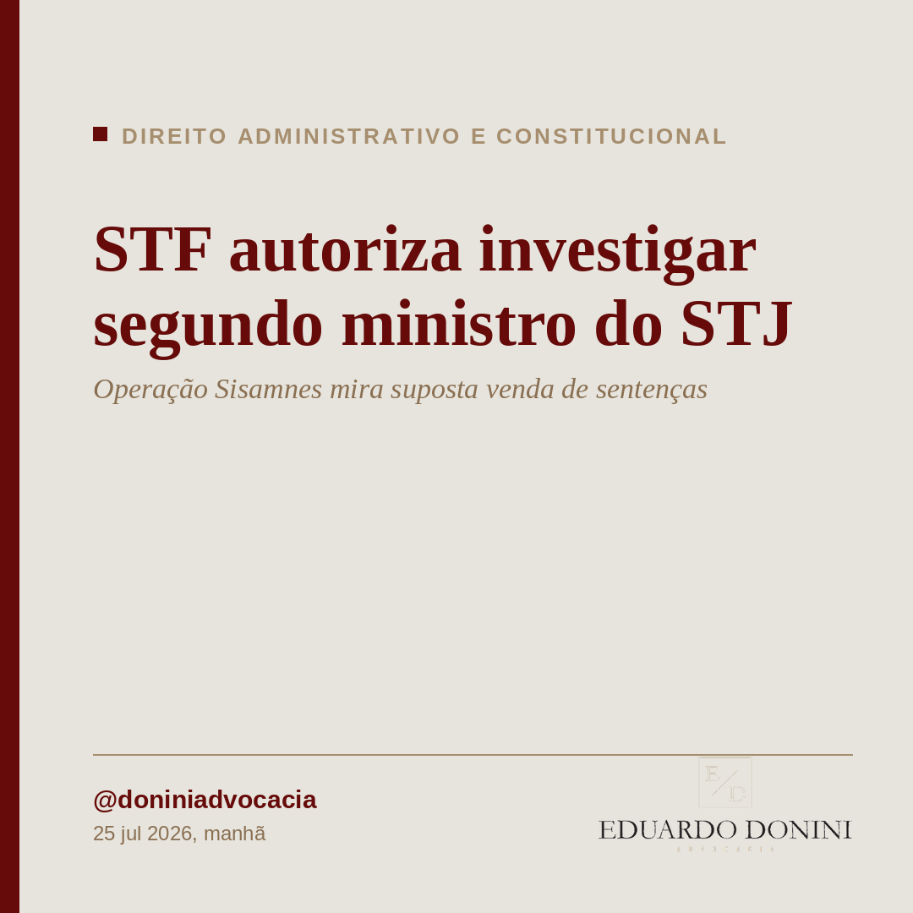
Direito Administrativo e Constitucional
25 jul 2026, manhã
O ministro Cristiano Zanin, do Supremo Tribunal Federal, autorizou a Polícia Federal a investigar o ministro Marco Buzzi, do Superior Tribunal de Justiça, dentro do inquérito que apura suposto esquema de venda de sentenças na Corte. A autorização veio depois que investigadores identificaram menções a familiares do magistrado em materiais reunidos pela Operação Sisamnes, que apura o caso desde novembro de 2024. Este é o segundo ministro do STJ incluído nessa apuração, já que Zanin também havia autorizado investigação contra o ministro Paulo Dias de Moura Ribeiro. A defesa de Buzzi nega qualquer irregularidade e afirma que ele sequer figura como investigado no processo, que corre sob sigilo. O caso tramita paralelamente ao processo administrativo disciplinar que o próprio STJ conduz contra o ministro, com julgamento previsto para 6 de agosto.
#DireitoConstitucional #STF #STJ #OperaçãoSisamnes #JustiçaBrasileira #NotíciasJurídicas
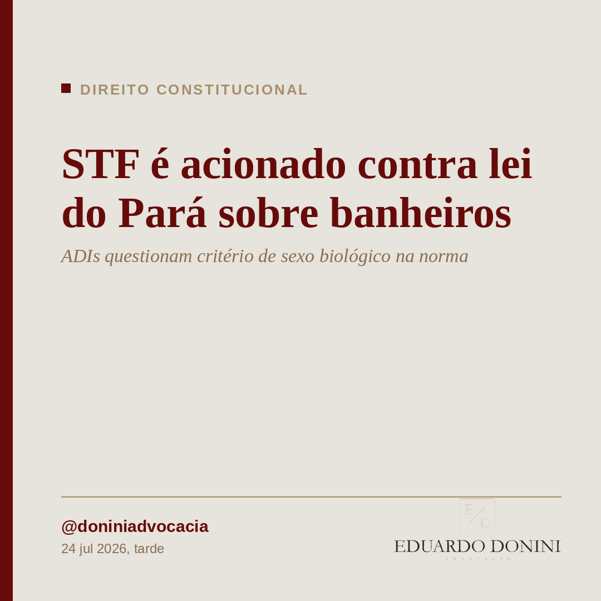
Direito Constitucional
24 jul 2026, tarde
O Supremo Tribunal Federal recebeu duas ações diretas de inconstitucionalidade contra uma lei do Estado do Pará que autoriza instituições religiosas e escolas confessionais a definirem o uso de banheiros com base exclusivamente no sexo biológico, sem considerar a identidade de gênero. As ADIs 7996 e 7997 foram distribuídas ao ministro Luiz Fux, sendo a primeira ajuizada pela Aliança Nacional LGBTI+ e a segunda por entidades nacionais de representação de travestis e transexuais. As autoras sustentam que a Lei estadual 11.660/2026 viola princípios constitucionais como dignidade da pessoa humana, igualdade, identidade de gênero e laicidade do Estado. Também argumentam que a norma invade competência privativa da União para legislar sobre direitos da personalidade e direito civil. O caso deve reacender o debate sobre os limites da autonomia religiosa em face de direitos fundamentais no Brasil.
#DireitoConstitucional #STF #ADI #DireitosFundamentais #Pará #NotíciasJurídicas
{kind=link}
{kind=link}
{kind=link}
{kind=link}
{kind=link}
{kind=link}
{kind=link}
{kind=link}
{kind=link}
{kind=link}
{kind=link}
{kind=link}
{kind=link}
{kind=link}
{kind=link}
{kind=link}
{kind=link}